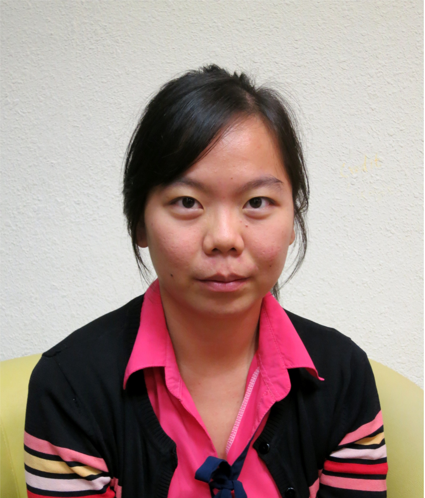

|  |
|
Biography
I am a tenure-track Assistant Professor at Southern University of Science and Technology. On March 2018, I obtained my PhD degree from School Of Computing in National University of Singapore. During my PhD studies, I was advised by Prof. Abhik Roychoudhury. Previously, I received my bachelor and master degrees from Department of Computer Science of University of Illinois at Urbana-Champaign. During my Master studies, I was co-advised by Darko Marinov and Lin Tan.
My CV is available for download here.My research interests include:
- Automated Program Repair
- Software Testing
- Comment Analysis
- Software Evolution
- Test Repair
- Mobile App Analysis
I am currently seeking new PhD students, Master students, and PostDocs with background in program analysis, software testing, and Android apps (NLP, evolutionary/genetic algorithm or machine learning experiences is a plus). If you are interested, please send me an email to set up a meeting.
News
- December. 2018: Our papers on Can I Have a Stack Trace to Examine the Dependency Conflict Issue?" has been accepted on ICSE2019!
- November. 2018: Please consider submitting your work to 6th Workshop on Genetic Improvement @ICSE2019. I am one of the organizers of the GI workshop.
- October. 2018: Please consider submitting your work to ESEC/FSE 2019 Tool Demos. I am on the program committee.
- September. 2018:Attended ASE 2018
- June. 2018: Started my new position as Assistant Professor in Southern University of Science and Technology
- May. 2018: Presented "Repairing crashes in Android Apps" at ICSE 2018
- April. 2018: Please consider submitting your work to ICSE 2019 ACM Student Research Competition. I am on the program committee.
- March. 2018: Our paper on "A spoonful of DevOps helps the GI go down" has been accepted in GI 2018@ICSE2018!
- Jan. 2018: Our journal on "A Correlation Study between Automated Program Repair and Test-Suite Metrics" has been accepted in ICSE2018 (Journal First)!
- Jan. 2018: Invited and Presented "Repairing crashes in Android Apps" at Dagstuhl Seminar on Genetic Improvement of Software
- Dec. 2017: Our paper on "Repairing Crashes in Android Apps" has been accepted in ICSE2018!
- Jan. 2017: Invited and Presented "Design of repair operators for automated program repair" at 50th CREST Open Workshop - Genetic Improvement
- Jan. 2017: Attending Global Young Scientists Summit (GYSS) 2017
- Nov. 2016: @tComment is publicly available in github!
- Oct. 2016: Attended 2016 Grace Hopper Celebration of Women in Computing
- Sept. 2016: Invited and Presented "Anti-pattern in Search-Based Program Repairs" at Microsoft PhD Forum 2016 at Microsoft Research Asia.
- Aug. 2016: Received Google Anita Borg Travel Grant for attending 2016 Grace Hopper Celebration of Women in Computing
- Aug. 2016: Received Dean's Graduate Research Excellence Award
- Aug. 2015: Featured in NUS Computing News on Google Anita Borg Scholarship
Research Projects
Droix | Visit Website |
| Droix is a novel automated repair framework for Android apps. Droix could repair crashes based on one crashing UI input. We also propose Droixbench, a benchmark that contains a set of reproducible crashes in Android apps. | |
Codeflaws | Visit Website |
| Codeflaws is a benchmark that allows objective evaluation of program repair tools across defect classes. | |
Anti-patterns in Search-Based Program Repairs | Visit Website |
| Instead of using repair patterns obtained from human patches, our set of anti-patterns can be enforced on top of any search-based program repair tools. Enforcing anti-patterns in repair tools produces repairs faster, localizes better, and deletes less. | |
relifix | |
| A test-driven automated repair tool that uses a novel set of contextual operators for automated repair of software regressions. Our set of operators uses syntactical information from changed statements. Repair more bugs than existing program repair tool, GenProg and our generated repairs are less less likely to introduce new regressions than GenProg. | |
Software Change Contract | Visit Website |
| A language that could be used to specify intended effect of program changes. Change contract focuses only on the program changes and their intended semantic effect. Program behavior that is unchanged across version does not need to be captured. | |
@tComment | Visit Website |
| Novel approach that automatically generates unit tests that check for inconsistencies between Javadoc comments written in natural languages and Java source code. Reported 24 inconsistencies in 6 open-sources Java projects. | |
ReAssert | Visit Website |
| A tool that automatically repair broken tests with the push of a button. | |
Software Patents
Software program repair | Patent |
| Hiroaki Yoshida, Shin Hwei Tan, Mukul R. Prasad | |
| (Abstract) According to an aspect of an embodiment, one or more systems or methods may be configured to locate a fault in a software program using a test suite. The systems or methods may be further configured to modify, using a repair template, the software program in response to locating the fault. In addition, the systems or methods may be configured to determine whether the modification satisfies an anti-pattern condition. The anti-pattern condition may indicate whether the modification is improper. The systems or methods may also be configured to disallow the modification in response to the modification satisfying the anti-pattern condition or perform further testing on the software program, as modified, in response to the modification not satisfying the anti-pattern condition. | |
Publications
| [ASE 2018] | |
| Android Testing via Synthetic Symbolic Execution | |
|
| Xiang Gao, Shin Hwei Tan, Zhen Dong, Abhik Roychoudhury |
| (One-line Abstract) We propose a dynamic symbolic execution engine for Android apps, without any manual modeling of execution environment | |
| 33rd Automated Software Engineering (ASE), 2018. | |
| [ICSE 2018] | |
| Repairing crashes in Android apps | |
|
| Shin Hwei Tan, Zhen Dong, Xiang Gao, Abhik Roychoudhury |
| (One-line Abstract) We propose Droix, the first novel Android repair system that could automatically fix crashes in Android apps based on only one single UI sequence as test input. | |
| 40th International Conference on Software Engineering (ICSE), 2018. | |
| [GI@ICSE 2018] | |
| A spoonful of DevOps helps the GI go down | |
|
| Benoit Baudry, Nicolas Harrand, Eric Schulte, Chris Timperley, Shin Hwei Tan, Marija Selakovic, Emamurho Ugherughe |
| (One-line Abstract) We discuss why we believe that DevOps offers an excellent technical context for easing the adoption of GI techniques by software developers. | |
| 4th International Genetic Improvement Workshop | |
| [EmSE, Journal First ICSE 2018] | |
| A correlation study between automated program repair and test-suite metrics | |
|
| Jooyong Yi, Shin Hwei Tan, Sergey Mechtaev, Marcel Boehme, Abhik Roychoudhury |
| (One-line Abstract) A study that answers the question "Can traditional test-suite metrics proposed for the purpose of software testing also be used for the purpose of automated program repair?". | |
| Empirical Software Engineering, Journal First | |
| [FSE 2017] | |
| A Feasibility Study of Using Automated Program Repair for Introductory Programming Assignments | |
|
| Jooyong Yi, Umair Z. Ahmed, Amey Karkare, Shin Hwei Tan, Abhik Roychoudhury |
| (One-line Abstract) The first study that investigates the feasibility of applying automated program repair techniques for fixing programming assignments. | |
| ACM SIGSOFT International Symposium on Foundations of Software Engineering | |
| [ICSE Poster 2017] | |
| Codeflaws: A Programming Competition Benchmark for Evaluating Automated Program Repair Tools | |
|
| Shin Hwei Tan, Jooyong Yi, Yulis, Sergey Mechtaev, Abhik Roychoudhury |
| (One-line Abstract) Codeflaws allows objective evaluation of program repair tools across well-defined defect classes. | |
| [FSE 2016] | |
| Anti-patterns in Search-based Program Repair | |
|
| Shin Hwei Tan, Hiroaki Yoshida, Mukul Prasad and Abhik Roychoudhury |
| (One-line Abstract) Enforcing anti-patterns in repair tools produces repairs faster, localizes better, and deletes less. | |
| 24th ACM SIGSOFT International Symposium on the Foundations of Software Engineering (FSE), 2016. Acceptance Rate: 27% (74/273) | |
| [ICSE 2015] | |
| Relifix: Automated Repair of Software Regressions | |
|
| Shin Hwei Tan, Abhik Roychoudhury |
| (One-line Abstract) First automated repair tool for automatic fixing of software regressions using a novel set of contextual operators from two program versions. | |
| 37th International Conference on Software Engineering (ICSE), 2016. Acceptance Rate: 18.5% (84/452) | |
| [TOSEM 2015] | |
| Software Change Contracts | |
|
| Jooyong Yi, Dawei Qi, Shin Hwei Tan, Abhik Roychoudhury |
| (One-line Abstract) Change contracts formally specify the intended effect of program changes. | |
| ACM Transactions on Software Engineering and Methodology (TOSEM), 2015 | |
| [ISSTA 2013] | |
| Expressing and Checking Intended Changes via Software Change Contracts. | |
|
| Jooyong Yi, Dawei Qi, Shin Hwei Tan, Abhik Roychoudhury |
| (One-line Abstract) Change contracts formally specify the intended effect of program changes. | |
| International Symposium on Software Testing and Analysis, (ISSTA), 2013. Acceptance rate: 32/124, 25.8% | |
| [ICST 2012] | |
| @tComment: Testing Javadoc Comments to Detect Comment-Code Inconsistencies | |
|
| Shin Hwei Tan, Darko Marinov, Lin Tan, Gary T. Leaven |
| (One-line Abstract) Novel approach that automatically generate tests that check for inconsistencies between Javadoc comments and Java source code. | |
| Fifth International Conference on Software Testing, Verification and Validation, (ICST), 2012. Acceptance Rate: 26.9% (39/145). | |
| [ICSE 2011] | |
| ReAssert: A Tool for Repairing Broken Unit Tests | |
|
| Brett Daniel, Tihomir Gvero, Vilas Jagannath, Johnston Jiaa, Damion Mitchell, Jurand Nogiec, Shin Hwei Tan, Darko Marinov |
| (One-line Abstract) A tool (Eclipse-plugin) that automatically fixes broken unit tests. | |
| 33rd International Conference on Software Engineering, (ICSE Demo), 2011. | |
| [Master Thesis] | |
| @tComment: Testing Javadoc Comments to Detect Comment-Code Inconsistencies | |
|
| Shin Hwei Tan |
| Thesis submitted for the degree of Master of Science (MS), Department of Computer Science, University of Illinois at Urbana-Champaign in 2012. Won David J. Kuck Outstanding MS Thesis Award! | |
Teaching
Teaching at National University of Singapore (NUS)
- CS 4218 - Software Testing
Teaching at University of Illinois at Urbana-Champaign (UIUC)
- Teaching Assistant for CS 428 - Software Engineering II (I2CS), Spring 2011
- Also offered in the Online Master's Program (formerly known as the Illinois Internet Computer Science (I2CS) program)
- Teaching Assistant for CS 427 - Software Engineering I, Fall 2011
- Teaching Assistant for CS527 - Topics in Software Engineering, Fall 2011
- Teaching Assistant for CS 427 - Software Engineering I, Fall 2010
- Laboratory Helper & Grader for CS 102 - Little Bits to Big Ideas
Selected Awards
- Google Anita Borg Memorial Scholarship (2015)
- Aim to encourage women to excel in computing and technology, and become active role models and leaders in these fields
- David J. Kuck Outstanding MS Thesis Award (2013)
- Best Master Thesis in UIUC
Awards and Recognitions
- Google Anita Borg Memorial Scholarship (2015)
- David J. Kuck Outstanding MS Thesis Award (2013)
- Dean's Graduate Award (2016)
- Research Achievement Award (2015)
- MSRA Fellowship Nomination Award (2013)
- Singapore International Graduate Award (2012-2016)
- ACM-W Scholarship (2012)
- Malaysian Government Scholarship (2006-2010)
- Rockwell Collins Scholarship (2009)
- Motorola Academic Scholarship (2008)
Service
- PC Chair for6th Workshop on Genetic Improvement @ICSE2019.
- PC for ESEC/FSE 2019 Tool Demos.
- PC for Student Research Competition at ICSE 2019
- PC for Genetic Improvement Workshop Genetic and Evolutionary Computation Conference (GECCO2018)
- Reviewer for Transactions on Software Engineering (TSE2017)
- Reviewer for Empirical Software Engineering (EMSE2017)
- Artifact Evaluation Committee for The ACM SIGSOFT International Symposium on Software Testing and Analysis (ISSTA2014)
- Co-reviewer for International Conference on Software Engineering (NIER)